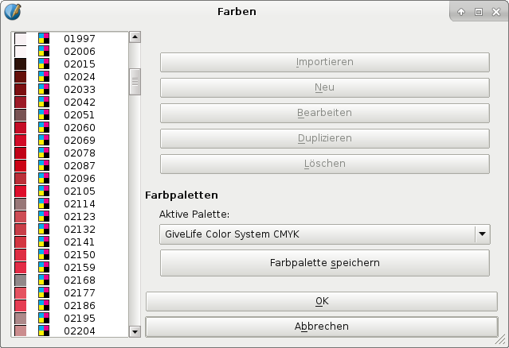

GiveLife Color System® is a Spanish company founded by designers and engineers to create new color systems for graphics and design professionals, especially in the Hispanic world.
Until now, GiveLife Color System® has developed two numerical color systems, one in RGB and one in CMYK. Scribus is the first graphics program which is being shipped by default with the GiveLife Color System® color palettes.
|  |
This palette consists of 2265 CMYK colors, each of which has a five-digit numerical code. The system has been developed for use in print-related projects. The company offers a printed color reference for this palette on its website. This “Color Guide Book” has been created using the ICC profile FOGRA 39 (ISO 12647-2:2004).
The second palette comprises 5101 RGB colors, each of which has a four-digit numerical code. The correct ICC profile for use with this palette is sRGB.
Note that you need to install the profiles listed above to use the colors reliably.
The Scribus Team will cooperate with GiveLife Color System® to ensure that updates to the existing palettes, as well as new color systems will be made available to our users in the future.